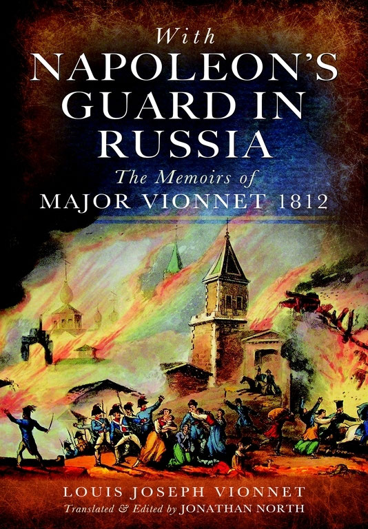
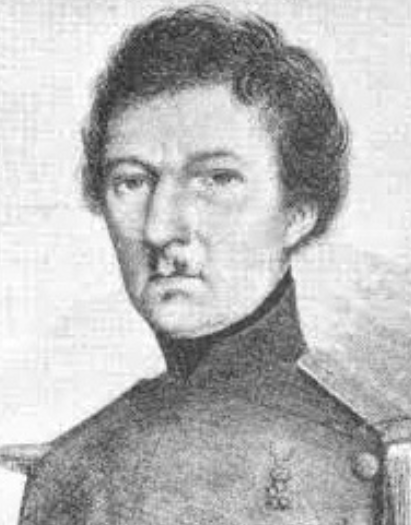
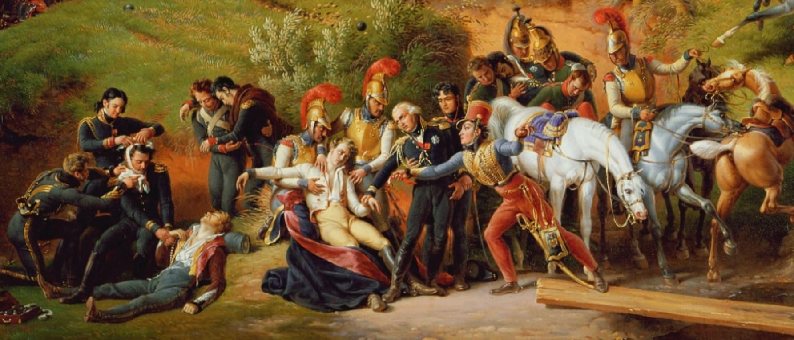
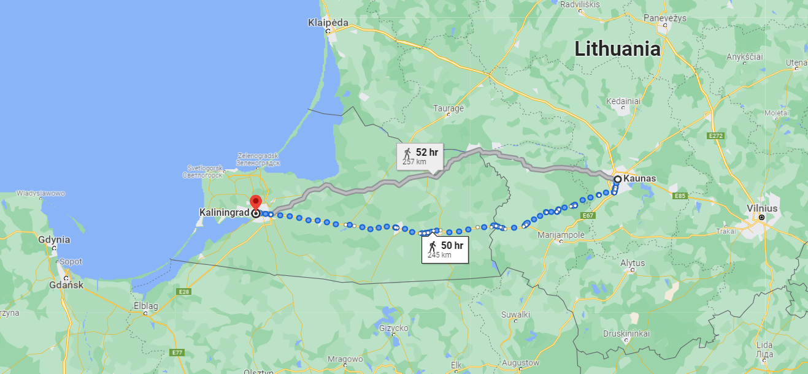
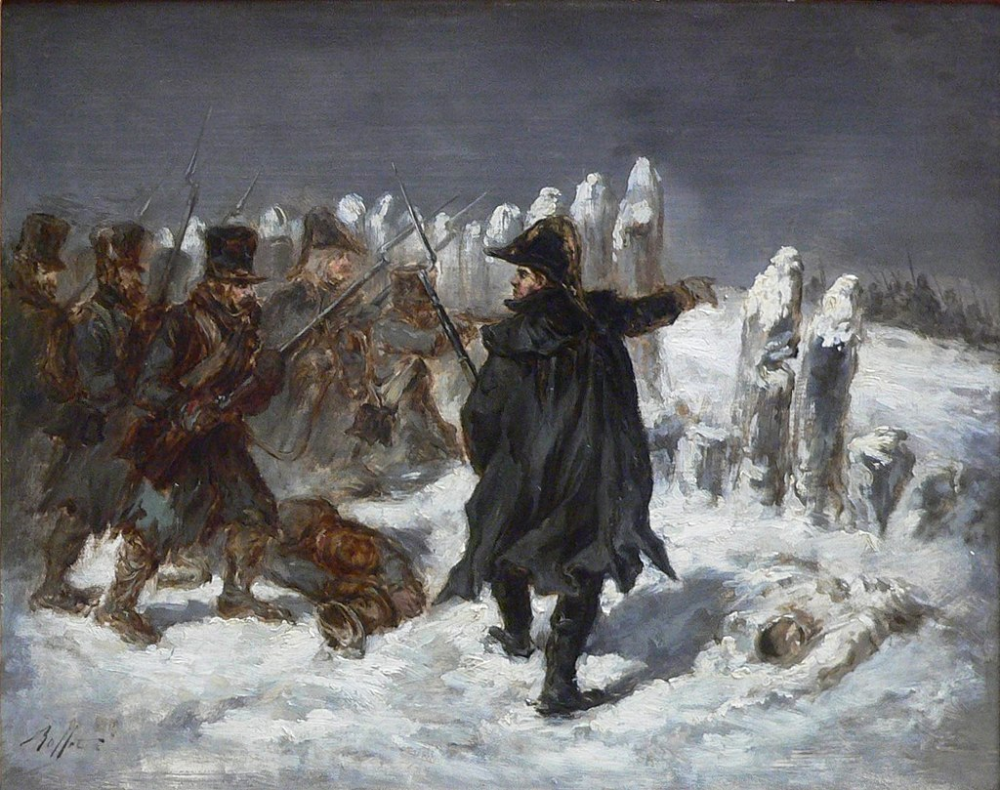
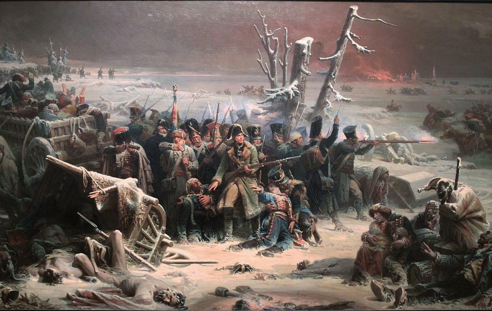
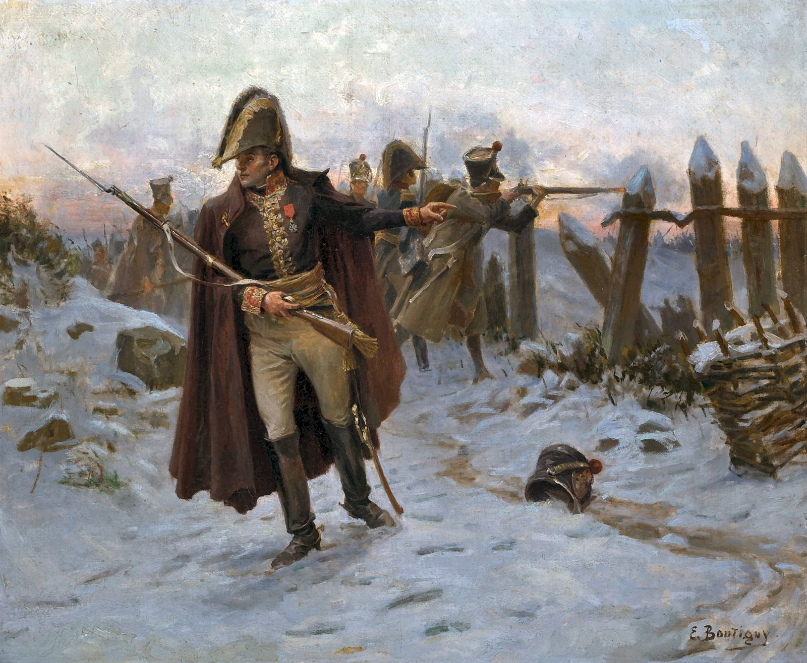

러시아의 마지막 프랑스인, 네만 강을 건너다
게시: 2021-12-20T06:30:29+09:00
빌나에서 코브노까지는 약 3일 행군거리였습니다. 그 기간 내내 기온은 계속 추워서 영하 30도 이하를 유지했습니다. 만약 날씨가 갑자기 따뜻해졌다면 네만 강이 녹아서 베레지나에서처럼 임시 교량을 놓아야 했으니 차라리 잘 되었다고 생각할 수도 있겠습니다만, 실은 코브노에는 네만 강을 건너는 다리가 있었으므로 굳이 날씨가 추워야 할 필요도 없었습니다. 당시 3일 동안 영하의 강추위 속에서 미끄러운 눈길을 걸어야 했던 병사들에게 추위는 곧 죽음을 의미했습니다. 비오네(Louis Joseph Vionnet, Vicomte de Maringone) 소령의 회고록에 따르면 당시 동상으로 살점이 떨어져 나가는 바람에 손이나 손가락에서 뼈가 드러난 병사들이 상당히 많았다고 합니다.

(훗날 부르봉 왕가로부터 마링고네 자작의 작위를 받는 비오네 소령은 1812년 당시 고참 근위대(Vieille Garde) 중 화승총 연대(Fusiliers-Grenadiers) 소속이었습니다. 그는 나폴레옹과 동갑으로서 농부의 아들이었는데, 레이스 만드는 일을 하다 24세의 나이로 포병대에 자원입대했다가 바로 다음해에 대위가 되었습니다. 나폴레옹의 근위대 출신으로서는 드물게도 나폴레옹 몰락 이후 반-나폴레옹주의자가 되어 당연히 백일천하 때도 부르봉 왕가를 위해 복무했고, 그렇기 때문에 더더욱 그의 회고록은 나름대로의 가치가 있습니다.) 이때까지 살아남은 병사들은 둘 중의 하나였는데, 정말 철저한 이기주의자로서 자기 목숨을 건지기 위해 남들을 짓밟고 살아남았거나, 아니면 정반대로 부대 깃발 밑에서 동료들을 다독이며 군인으로서의 긍지를 지키고자 했던 사람이었습니다. 다 믿을 수 있는 이야기인지는 모르겠으나, 살아남은 사람들이 쓴 회고록에 따르면 후자가 훨씬 많았던 것 같습니다. 전자의 대표적인 인물은 다름 아닌 총사령관 뮈라 본인이었고, 후자의 대표적인 인물은 네 원수였습니다. 뮈라는 남들과는 다르게, 누구보다 빠르게 병사들을 버리고 앞장서서 후퇴하고 있었지만 네는 바보스러울 정도로 충직하게 후위대를 맡고 있었습니다. 그랑다르메 전체의 후위대였는데도 숫자는 8백 정도에 불과했는데, 네는 러시아 기병들이 돌격을 해올 때마다 병사들과 함께 앞장서서 그를 격퇴했습니다. 이건 네 본인의 주장이 아니라 부르고뉴(Adrien Jean-Baptiste François Bourgogne) 하사의 목격담이니 믿을 만한 것 같습니다. 부르고뉴 하사의 증언에 따르면 나폴레옹마저 떠나버린 그런 악조건 속에서도 그렇게 부대를 유지하며 임무에 충실하려는 병사들이 꽤 많았습니다. 그의 회고록에 따르면 러시아군이 추격해왔을 때, 초라한 차림새의 한 대령이 이렇게 외치자 몇명 남지 않은 연대 전체가 그 명령에 따라 후퇴를 멈추고 뒤돌아 적과 싸웠다고 합니다. "가자, 프랑스의 아들들아! (Allons enfants de la France! 이 부분은 프랑스 국가 마르세예즈 첫구절을 연상시키네요.) 우리는 다시 싸워야 한다! 뒤에서 포성이 울리자 우리가 발걸음을 빨리 했다는 이야기가 나돌아서는 안된다! 모두 뒤로 돌아!"

(부르고뉴 하사는 캔버스천 장수의 아들로 태어나 21살이던 1806년 근위대에 입대했습니다. 1809년 아스페른-에슬링 전투에 참전했다가 2번 부상당한 뒤, 스페인-포르투갈 전선에 투입되었습니다. 그가 하사가 된 것은 1812년 러시아 원정을 떠나기 직전이었습니다. 그 다음해인 1813년 그는 제145 연대에 소위로 임관되는데, 이는 아마도 그랑다르메 궤멸 이후 새로운 군대를 급조하려고 애쓰던 나폴레옹이 경험있는 장교 부족에 직면했기 때문인 것 같습니다. 그러나 불행히도 그는 몇 달 안되어 프로이센에서 싸우다 부상을 입고 포로가 되었고, 그때부터 회고록을 쓰기 시작했습니다. 나폴레옹 퇴위 이후 포로 신세에서 해방된 그는 고향으로 돌아와 아버지의 직업인 직물 사업을 물려 받으며 결혼도 했으나, 장사는 잘 안되었습니다. 그는 7월 혁명으로 부르봉 왕정이 무너지자 다시 군에 지원했고 마침내 정식으로 다시 장교가 되어 22년간 복무한 뒤 1853년 명예롭게 전역하여 회고록을 완성하고 평온하게 장수하다 1867년 사망했습니다. 그는 회고록 제목을 장교가 아닌 '부르고뉴 하사의 회고록'이라고 지어서 당시의 경험을 자랑스럽게 생각했다는 것을 분명히 했습니다. 그의 초상화는 어째 베네딕트 컴버배치를 닮았군요.) 이렇게 전투 뿐만 아니라 계속 이어진 후툇길에서도 전우애가 넘쳐났습니다. 워낙 추위가 거셌고 병사들은 이미 많이 지치고 병들었으므로 쓰러지는 병사들이 속출했는데, 그렇게 쓰러진 사람들을 도와주느라 멈춰서는 병사들이 많았습니다. 이는 이제 안전한 곳이 코 앞으로 다가와서 사람들 마음에 여유가 생겼기 때문일 수도 있고, 반대로 그렇게 이타적인 병사들만 살아남았다고 볼 수도 있습니다. 제8 창기병대의 드뤼종 드 볼리유(Drujon de Beaulieu) 대위는 그렇게 후퇴하다 지친 나머지 길 옆에 주저앉아 그냥 죽으려 했는데, 아직 말을 가지고 있던 그의 연대 소속 병사 하나가 그를 알아보고, 멈춰 서서는 그에게 빵 한조각을 주고 자기 말에 그를 태워주는 바람에 살 수 있었습니다. 이리베리고앙(Irriberrigoyen) 하사가 전하는 이야기는 더 극적입니다. 그는 제1 폴란드 창기병대에서 복무했는데, 이때 당시 그는 부대와 떨어져 중위 한 명과 둘이서 길을 걷고 있었습니다. 그런데 중위가 너무 지쳐 길바닥에 주저앉아 자기를 버리고 그냥 가라고 했지만 그는 차마 중위를 버릴 수 없었습니다. 그렇게 오도가도 못하고 있는데 웬 썰매가 지나가다 섰습니다. 썰매에는 병사 하나가 타고 있었는데, 바로 그 창기병 연대 소속으로서, 중위가 잘 아는 말썽꾸러기 병사였습니다. 그 병사는 명령 불복종과 약탈 등의 죄를 여러 번 저질러 바로 그 중위가 이 병사를 4번이나 처벌했고 심지어 총살시키겠다고 협박까지 했던 원수였습니다. 그런데 이 병사는 이 둘을 보더니 하사보고는 썰매에 타라고 하고는 중위에게 다가가 한대 때리더니 직접 중위를 떠매고 썰매에 태운 뒤 털가죽을 덮어주며 이렇게 웃으며 말했다고 합니다. "제가 약탈을 했다고 중위님이 저를 처벌하셨지요. 그런데 오늘 중위님을 살리는 이 썰매와 털가죽 모두 제가 약탈한 거라는 것이 참 아이러니하지 않습니까?" 하지만 반대로 자기만 살겠다고 남을 마구 대하는 경우도 여전히 발생했습니다. 보로디노 전투에서 그랑다르메 전체의 포병을 지휘했던 라리봐지에르(Jean Ambroise Baston de Lariboisière) 장군은 당시 병에 걸린 환자로서, 부관 하나와 단 둘이서 코브노로 향하고 있었습니다. 그 둘은 어느 날 밤 작은 움막 하나를 찾았고 거기서 밤을 보내려고 했는데, 들어가보니 10대 후반의 어린 네덜란드 징집병 두 명이 이미 거기서 불을 피워놓고 자고 있었습니다. 라리봐지에르와 부관은 계급을 이용하여 그 두 어린 병사를 쫓아내고 움막을 차지했는데, 쫓겨난 병사들은 멀리 가지 않고 움막 바로 밖에서 계속 찡얼대며 들여보내달라고 사정했습니다. 그러나 당장 자기들이 편하고자 두 사람은 그 소리를 무시하고 잠들었는데, 일어나보니 움막 밖에는 그 두 병사가 얼어죽어 있었습니다.

(기억들 하시겠지만, 라리봐지에르는 바그람 전투에서 프랑스군 전체 포병을 총괄했던 거물입니다. 그런 고위급 인물조차 병에 걸리면 부관과 단 둘이서 길을 걸어야 할 만큼 당시 그랑다르메의 사정이 좋지 않았습니다. 라리봐지에르는 나폴레옹보다 10살 연상의 귀족 출신으로서, 1805년 아우스테를리츠 전투 막판에 얼어붙은 호수 위로 후퇴하는 러시아군을 향해 포격을 가해 러시아군 수장이라는 전설을 만든 장본인이기도 합니다. 위 그림은 이미 몇 번 보신 르죈이 그린 보로디노 전투화 중 아랫 부분입니다. 여기서 가운데에 쓰러져 부축받는 어떤 젊은이의 손을 잡고 있는 은발머리에 어두운 감색 군복의 장군이 바로 라리봐지에르이고, 짐작하다시피 그 쓰러진 젊은이가 그의 아들 페르디낭입니다. 페르디낭은 보로디노 전투에서 기병 돌격을 감행하다 전사했습니다. 라리봐지에르 장군도 어렵게 네만 강은 건넜지만, 더 멀리 가지 못하고 동프로이센의 쾨니히스베르크에서 결국 병사했습니다.) 이렇게 온갖 미담과 추잡함을 남기며 그랑다르메가 도착한 코브노, 즉 카우나스는 요새화된 작은 국경 도시로서 식량도 꽤 충분히 비축되어 있었고 성벽도 잘 보수된 편으로서 농성이 분명히 가능했습니다. 그러나 뮈라는 여기서 지체할 생각이 추호도 없었습니다. 그는 방어가 가능한지 성벽을 살펴본다던가 비축 식량에 대한 보고를 받을 생각은 커녕, 뒤따라 오는 병사들을 기다리지도 않고 그냥 쾨니히스베르크로 가버렸습니다. 어쩌면 뮈라가 결단력이 좋은 것일 수도 있었습니다. 12월 12일부터 코브노로 쏟아져 들어오기 시작한 그랑다르메는 뭘 지키고 자시고 할 상태가 아니었기 때문이었습니다. 이들은 코브노로 들어오자마자 정규 배식을 기다리지도 않고 닥치는 대로 가게와 창고로 달려가 손에 잡히는 모든 것을 먹어치웠습니다. 비극은 이들이 술 창고를 털면서 더 심화되었습니다. 많은 병사들이 초현실적인 극한의 괴로움을 잊고자 술을 마셔댔는데, 원래 모든 국가의 병사들은 춥건 괴롭건 그런 것과는 상관없이 장교가 없는 상태에서 술을 잔뜩 손에 넣으면 무조건 마셔대기 마련이었습니다. 술을 마시면 처음에는 몸이 후끈해지며 추운 것을 잊게 되지만, 사실 그건 착각일 뿐이고 실제로는 체온이 더 내려갔습니다. 그렇게 험난한 길을 초인적인 힘으로 뚫고 왔건만, 결국 술 때문에 코브노 시내에서만 수천 명이 길바닥에서 술에 취한 채 얼어죽었습니다. 뮈라가 제대로 병력 통솔을 하지 않은 대가치고는 너무나 뼈아픈 것이었습니다.

(코브노로부터 동프로이센의 수도인 쾨니히스베르크까지는 약 7~8일 걸리는 행군길입니다. 쾨니히스베르크는 제2차 세계대전 이후 러시아 영토가 되어 지금은 러시아의 주요 군항인 칼리닌그라드가 되어 있습니다.) 술에 취하지 않은 병사들은 모두 지체하지 않고 네만 강에 놓인 다리를 건너 쾨니히스베르크로 향했습니다. 러시아군에서도 이들을 악착같이 끈질기게 추격했습니다. 네 장군은 뮈라와는 달리 마지막까지 후위대로서의 역할을 충실히 했습니다. 그는 코브노 외곽에 방어진을 치고 띄엄띄엄 계속 들어오는 낙오병들을 한명이라도 더 구해내려 했습니다. 네의 후위대는 충실하게 코삭 기병들을 막아내며 굳건히 싸웠지만 그 피해가 작지 않았습니다. 나중에는 정규 러시아군 기병대와 포병대까지 도착하여 포격을 해대는 바람에 큰 피해를 입었지만, 네는 빌나 외곽 포나리 고갯길에서 만난 노엘 소령의 대포들로 반격하며 굽히지 않았습니다. 결국 막판에 백여 명의 병사들만 남게 되자, 네는 비로소 코브노 시내를 지나 다리를 건너 후퇴했습니다. 그렇게 후퇴하는 내내 추격하는 러시아군과 계속 전투를 벌였는데, 이때도 네는 러시아군과 대면한 맨 앞줄에서 직접 머스켓 소총을 들고 사격을 했다고 합니다. 그는 코브노의 다리를 건너 후퇴한 마지막 프랑스군이자, 러시아군을 향해 발포한 마지막 프랑스군이었습니다. 그는 다리를 건너 폴란드 땅에 도착한 뒤 강 건너의 러시아군에게 마지막 한 방을 쏜 뒤, 빈 머스켓 소총을 얼어붙은 네만 강에 집어던지고는 뒤돌아서서 걸어갔다고 합니다. 이는 러시아군이 네만 강을 건너 추격해오지 않을 것이라는 강한 믿음이 있기 때문에 벌인 일종의 쇼우였지요.

('러시아 땅의 마지막 프랑스군 네'를 그린 작품은 여러가지입니다. 물론 다 나폴레옹 몰락 이후 수십년 후에 그려진 상상화입니다. 이건 Denis-August-Marie Raffet의 작품입니다.)

(이건 Adolphe Yvon의 작품입니다.)

(이건 Paul Emile Boutigny의 작품입니다.) 그런데 정말 러시아군은 거기서 추격을 중단했을까요? 그리고 도중에 낙오한 그랑다르메 병사들은 어떻게 되었을까요? 다시 시선을 러시아군 쪽으로 돌려보겠습니다. Source : 1812 Napoleon's Fatal March on Moscow by Adam Zamoyski
https://www.napoleon.org/en/magazine/publications/with-napoleons-guard-in-russia-the-memoirs-of-major-vionnet-1812/ https://fr.wikipedia.org/wiki/Adrien_Bourgogne https://en.wikipedia.org/wiki/Jean_Ambroise_Baston_de_Lariboisi%C3%A8re https://en.wikipedia.org/wiki/Michel_Ney https://useum.org/artwork/Marshall-Ney-at-Retreat-in-Russia-Adolphe-Yvon-1856 https://www.pinterest.co.kr/pin/293085888228439908/